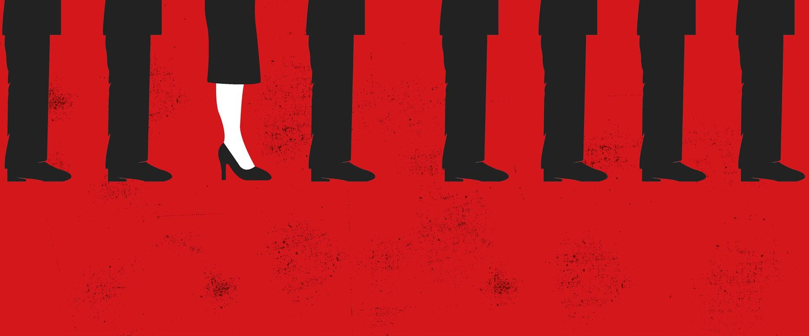

Equality
Legislative gender quotas are legal instruments that establish a maximum quota of both genders in political party candidate lists running for elections. The objective is to ensure fair representation of men and women among the candidates, promoting greater gender parity within legislative bodies. Among the 27 EU countries, there are 7 states that have both legislative and voluntary quotas, 3 with only legislative quotas in effect, 13 with only voluntary quotas, and 5 where no quota system has been implemented to date.
Among the 27 EU countries, there are 7 states that have both legislative and voluntary quotas, 3 with only legislative quotas in effect, 13 with only voluntary quotas, and 5 where no quota system has been implemented to date. This initiative has proven to be effective. Women in European parliaments have increased from an average of 20.9% in 2004 to 31.7% in 2019. 
This progress coincides with the period during which many EU countries implemented gender quota laws, including Italy (Law 165 of 2017). While the path to full gender equality is still long, this increase is a positive sign of the ongoing change. However, there are several pending issues to consider. Firstly, it's necessary to acknowledge that the quota system does not seem to have positively influenced women's access to key positions of legislative power. For instance, in Italy, only 10 out of 28 committee chairs and 5out of 17 parliamentary group leaders in the Chamber and Senate are women.
In Italy, the Rosato Law, officially known as Law 165 of November 3, 2017, commonly referred to as Rosatellum bis or simply Rosatellum, governs the election of the Chamber of Deputies and the Senate of the Italian Republic. This electoral law incorporates measures to ensure gender representation, including the following three conditions:
If the criteria are not met, the affected lists are not admitted (Art. 1, comma 10 e). In addition to these quotas, political parties also implement voluntary quotas based on their own statutes and regulations. These are commitments made by parties to ensure equitable inclusion of women and men, both in electoral lists (as an extra effort beyond national law) and within party roles. In some cases, these are recommendations, while in others, they serve as requirements. Among the parties represented in parliament, the Democratic Party is the only one that has established voluntary quotas, requiring a 50% female presence in its electoral lists.
In Italy, is used a mixed electoral system. 37% of seats are allocated through a majoritarian system, where the candidate with one more vote wins (single-member constituencies). Meanwhile, 63% of seats are distributed proportionally, based on the percentages of votes obtained by different parties (multi-member constituencies). In the 2018 elections for the Chamber of Deputies, 40% of candidates in each coalition's 232 single-member constituencies had to be women. There were also 63 multi-member constituencies, and electoral lists followed the proportional system.
At the outset, gender quotas are consistently observed; however, the data indicates that the selection of male or female candidates in single-member constituencies is meticulously planned. This strategic consideration stems from the fact that party leaders, who often happen to be male, are the ones responsible for determining electoral lists. Consequently, male party leaders tend to favor male candidates, contributing to this strategic decision-making process.Parties are acutally aware of the specific areas where they will be competing, and considering that the electoral districts are relatively small in size, the strategy is, to facilitate male candidates for constituencies considered to be armoured; those in which victory is considered almost certain due to a historical issue (such as the so-called 'red regions' for the centre-left), the pool of voters and the inferior notoriety of the opponent are considered safe constituencies. On the other hand, for the more uncertain territories, with less likelihood of majority victory, a woman is nominated. The 2018 elected at the Camera dei deputati are male 150 (65%) and the woman are 82 (35%). Moreover, as for the runners-up, we see that there are 130 men, i.e. fewer than those who won, and 106 women, far more than those elected.
For what concern the multi-nominal constituencies (63 in the chamber of deputies in 2018), the electoral law provides proportionality between the votes received by each party and the seats obtained as a result. As we have said, the lists are blocked, at least 40% of the candidates must be women, with mandatory gender alternation. For this reason, in contrast to the single-member, for the multi-nominal constituencies, the most uncertain constituencies will see a man as the leader. Sacrificing a female runner-up is a lower price to pay. On the other hand, in the most easily placed constituencies, female leaders multiply, so that the second candidates in the electoral list, a man, can also be elected. The issue becomes more intricate when it comes to multiple nominations. The law provides that all parties are entitled to nominate the same person in five multi-nominal constituencies and one single-nominal constituency. A manoeuvre that, on the one hand, opens up the possibility for small parties to hope for at least one seat, and on the other hand favours the strategies of those with more power. In fact, often the name of the same leading woman appears in the electoral lists of five (generally armoured) constituencies, the result? One woman will be elected and the others will be men, due to the system of gender alternation.